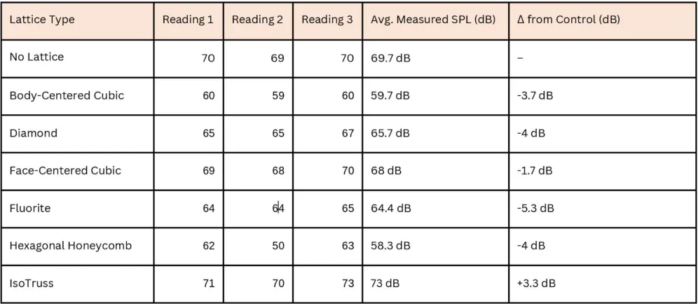

DFAM
Can structure alone make things quieter?
transmitted sound with the Hexagonal Honeycomb lattice vs no lattice
Result · controlled experiment

How do 3D-printed lattice structures affect acoustic damping?
Question
Which lattice structures reduce transmitted sound most effectively, using structural design alone?
Method
Six interchangeable lattice geometries in a sealed enclosure, a fixed tone source, three decibel readings each, against a no-lattice control.
Finding
Hexagonal Honeycomb (−11.4 dB) and Body-Centered Cubic (−10 dB) worked best. IsoTruss made things louder (+3.3 dB).
Control what you can. Be honest about what you can't.
Design the lattices → print the samples → build the test enclosure → set up measurement → run the trials → calculate results → analyse and conclude.
A phone playing a test tone from a tone generator sits inside a snap-fit sealing box, with its speaker facing an interchangeable lattice enclosure. An Apple Watch in a fixed position measures the decibels that get through.


Six cell topologies, from open trusses to closed cells.


Closed and complex beats open and directional.
The Hexagonal Honeycomb and Body-Centered Cubic structures were the most effective, likely because their tortuous paths and higher surface interaction disrupted the sound waves. The IsoTruss performed worst: its open, columnar design actually increased transmission by 3.3 dB.

“Closed and complex lattice geometries are more effective at reducing sound transmission than open, directional ones.”Conclusion
What this proves, and what it doesn't.
- Shows control of functional performance through DFAM techniques.
- Lattices enable multifunctionality: lightweight, customisable and tunable.
- Easy to integrate into the design of everyday things.
- Only PLA was tested. Other materials may behave differently.
- A limited set of lattices.
- Consumer decibel apps lack lab-grade calibration.
- No frequency sweep. Results are averaged across broadband noise.
Because rigour transfers.
This isn't a user study, but it's how I approach every study: one clear question, a control, a single variable, repeated measurements, and an honest limitations section. The same discipline goes into an A/B test, a usability benchmark or a survey instrument.
It's also a reminder that intuition is only a hypothesis: not every lattice helped, and one made things worse.
MSES →